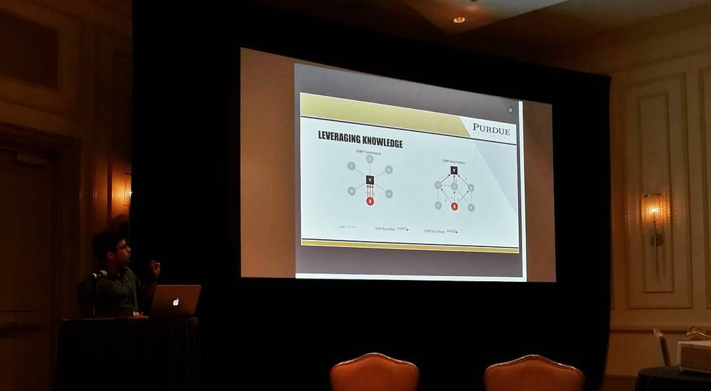

Projects
Jarvis: Safe Reinforcement Learning
The project focuses on developing practical, safe and secure Reinforcement Learning frameworks for optimizing various network functionalities as part of my PhD thesis. Two aspects of this work are geared towards two broad networking environments or scenarios:
- Jarvis for IoT Environments: The deployment of Internet of Things (IoT) combined with cyber-physical systems is resulting in complex environments comprising of various devices interacting with each other and with users through apps running on computing platforms like mobile phones, tablets, and desktops. We developed a constrained RL framework for IoT environments that determines optimal devices actions with respect to user-defined goals, such as energy optimization, while at the same time ensuring safety and security. We instantiate Jarvis for a smart home environment and evaluate its performance using both simulated and real world data.
This work will be presented at ICDCS 2020. You can find the slides, slack channel for discussion and presentation video here.
- Jarvis for SDN environments: Reinforcement Learning (RL) is an effective technique for building `smart' SDN controllers because of its model-free nature and ability to learn policies online without requiring extensive training data. However, as RL agents are geared to maximize functionality and explore the environment without constraints, security can be breached. In this paper, we propose Jarvis-SDN, a RL framework that constrains explorations by taking security into account. These security policies are learnt in a semi-supervised manner in the form of `partial attack signatures' from packet captures of IDS datasets that are then encoded in the objective function of the RL based optimization framework.
This work is currently in submission to ICC 2021 and a preprint will be uploaded here soon.
Intrusion Detection for IoT environments:
- E-Spion: As the Internet of Things (IoT) grows at a rapid pace, there is a need for an effective and efficient form of security tailored for IoT devices. We developed E-Spion which is an anomaly-based system level Intrusion Detection System (IDS) for IoT devices. It profiles IoT devices according to their `behavior' using system level information, like running process parameters and their system calls, in an autonomous, efficient, and scalable manner. These profiles are then used to detect anomalous behaviors indicative of intrusions.
This work was initiated at Hewlett Packard Labs (HPE) during my summer internship in 2017 under the supervision of Dr. Puneet Sharma. This work was presented at AsiaCCS 2019 (slides). An extension of the work which focuses on dealing with file-less attacks is published in the ACM TMIS journal. A patent was filed by HPE for this work which can be found here.
- Kalis: We developed a self-adapting, knowledge-driven expert Intrusion Detection System (IDS) able to detect attacks in real time across a wide range of IoT systems. Kalis does not require changes to existing IoT software, can monitor a wide variety of protocols, has no performance impact on applications on IoT devices, and enables collaborative security scenarios. Kalis is the first comprehensive approach to intrusion detection for IoT that does not target individual protocols or applications, and adapts the detection strategy to the specific network features. Extensive evaluation shows that Kalis is effective and efficient in detecting attacks to IoT systems.
The work was presented at ICDCS 2017 (slides) and the code for Kalis can be found here.

- Heimdall: We developed a whitelist-based intrusion detection technique tailored to IoT devices. Heimdall operates on routers acting as gateways for IoT as a homogeneous defense for all devices behind the router. The work was published in the IEEE Internet of Things Journal in 2017.
- IoTEDef: To enhance the security of IoT devices, we built IoTEDef, a deep learning-based system able to identify the infection events and evolve with the identified infections. IoTEDef understands multi-step attacks based on cyber kill chains and maintains detectors for each step. When it detects anomalies related to a later stage of the kill chain, IoTEDef backtracks the log of events and analyzes these events to identify infection events.
Ransomware Detection:
RW-Guard: Ransomware has recently (re)emerged as a popular malware that targets a wide range of victims - from individual users to corporate ones for monetary gain. Our key observation on the existing ransomware detection mechanisms is that they fail to provide an early warning in real-time which results in irreversible encryption of a significant number of files. RW-Guard, which is able to detect crypto-ransomware in real-time on a user’s machine by (1) deploying decoy techniques, (2) carefully monitoring both the running processes and the file system for malicious activities, and (3) omitting benign file changes from being flagged through the learning of users’ encryption behavior. We evaluate our system against samples from 14 most prevalent ransomware families to date. Our experiments show that RW-Guard is effective in real-time detection of ransomware with zero false negative and negligible false positive (∼0.1%) rates while incurring an overhead of only 1.9%. The work was presented at RAID 2018 (slides).
Hardware accelerated Cryptography
The secure and efficient operation of time-critical networks, such as vehicular networks, smart-grid, and other smart-infrastructures, is of primary importance in today's society. It is crucial to minimize the impact of security mechanisms over such networks so that the safe and reliable operations of time-critical systems are not being interfered. we introduce a new suite of real-time digital signatures referred to as Structure-free and Compact Real-time Authentication (SCRA), supported by hardware acceleration, to provide delay-aware authentication in time-critical networks. SCRA is a novel signature framework that can transform any secure aggregate signature into a signer efficient signature. We instantiate SCRA framework with condensed-RSA, BGLS, and NTRU signatures. We push the performance of SCRA schemes to the edge via highly optimized implementations on vehicular capable system-on-chip as well as server-grade general purpose graphics processing units.
The initial work which focused on developing a library in CUDA for hardware accelerated RSA based signatures using GPUs was presented in MILCOMM 2015. The library was later extended to include Elliptic Curve (ECDSA) and lattice based (NTRU) signatures and published in the IEEE TIFS journal. This work was part of my masters thesis on lattice based signatures which are resilient to post-quantum cryptographic attacks.
DITO: Honey-Pots for IoT Devices
Deception based techniques like honeypots are becoming popular as they are cost-effective, easier to implement and can be used to accurately detect attacks before they compromise the real devices. However, low interaction honeypots which only emulate certain services are easy for sophisticated attackers to evade. On the other hand, approach of using reach physical IoT devices as high interaction honeypots is costly to implement and not scalable. In this paper, we present ‘DITO’, a deception based best-effort interaction honey pot system tailored for IoT networks. DITO clones the real IoT device with high fidelity in terms of network communications and the running services, making it difficult for an attacker to evade. DITO also gathers detailed forensic information about any attack, including new attacks, rather than just generating an alert.

This work was initiated as part of my summer internship at HPE labs under the supervision of Dr. Puneet Sharma. We were runner up's in the best intern project for the summer of 2017 at HPE. This work was presented at HPE TechCon 2018.
Multi-Cast IPSec using Multi-Party Key Computation
One of the main obstacles to the wider commercial deployment of internet protocol (IP) multicast is the lack of security for the content being transmitted through IP multicast and communication infrastructure underlying IP multicast. This work presents a multi-party key computation (MKC) protocol which provides added security to IP multicast. The group key computation, in our protocol, involves multi-party computations using one-time pad and a secret sharing scheme. The proposed protocol is secure, efficient and compatible with IPSec. This work was initiated as part of my bachelor's thesis under the guidance of Dr. Manik Lal Das.